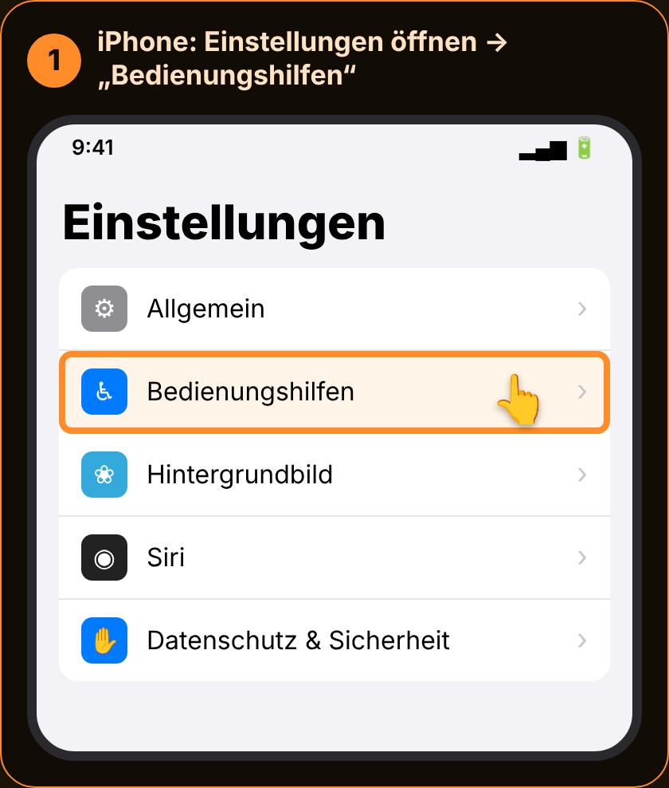
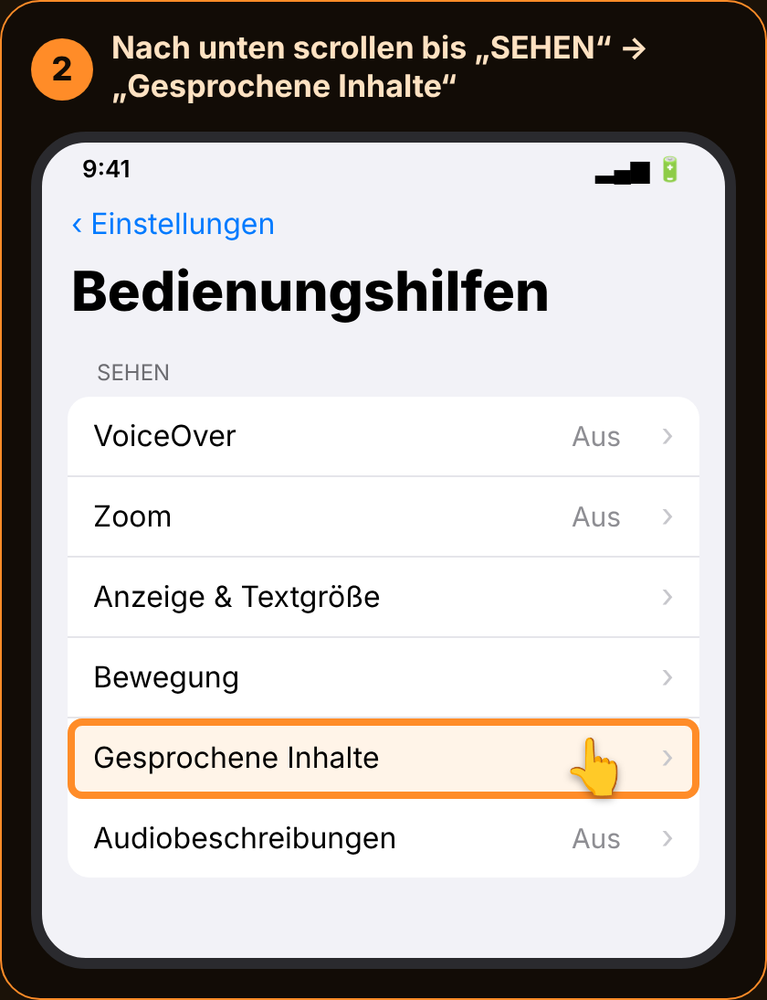
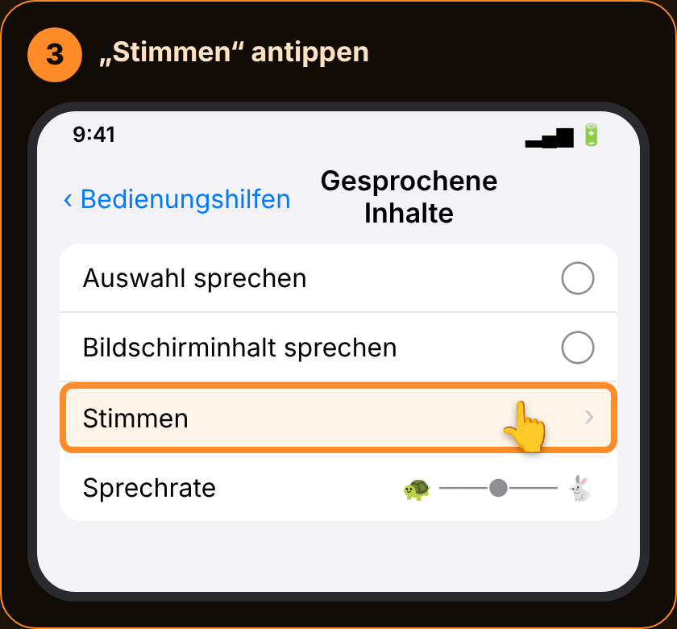
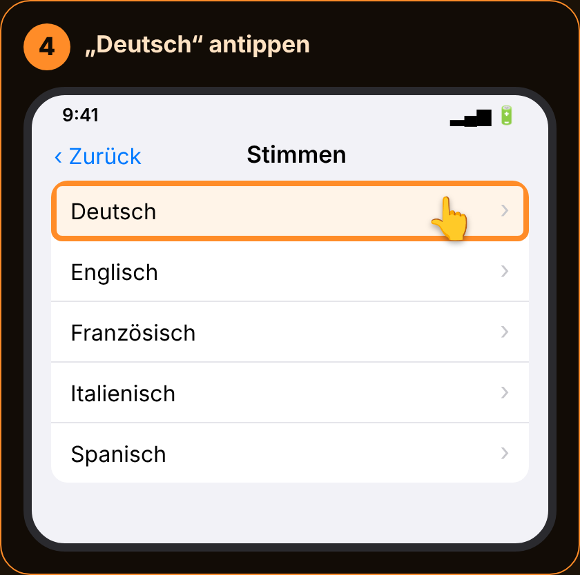
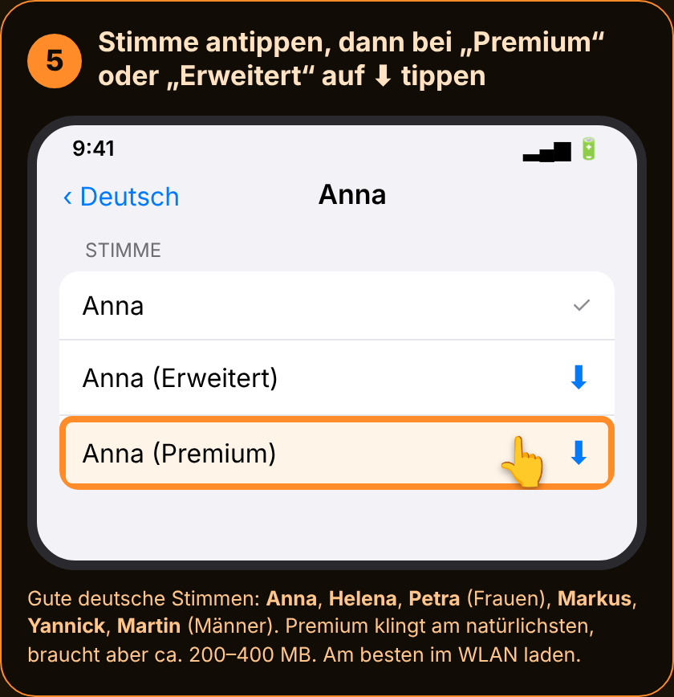
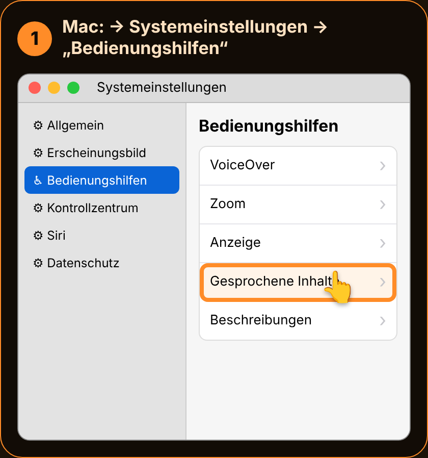
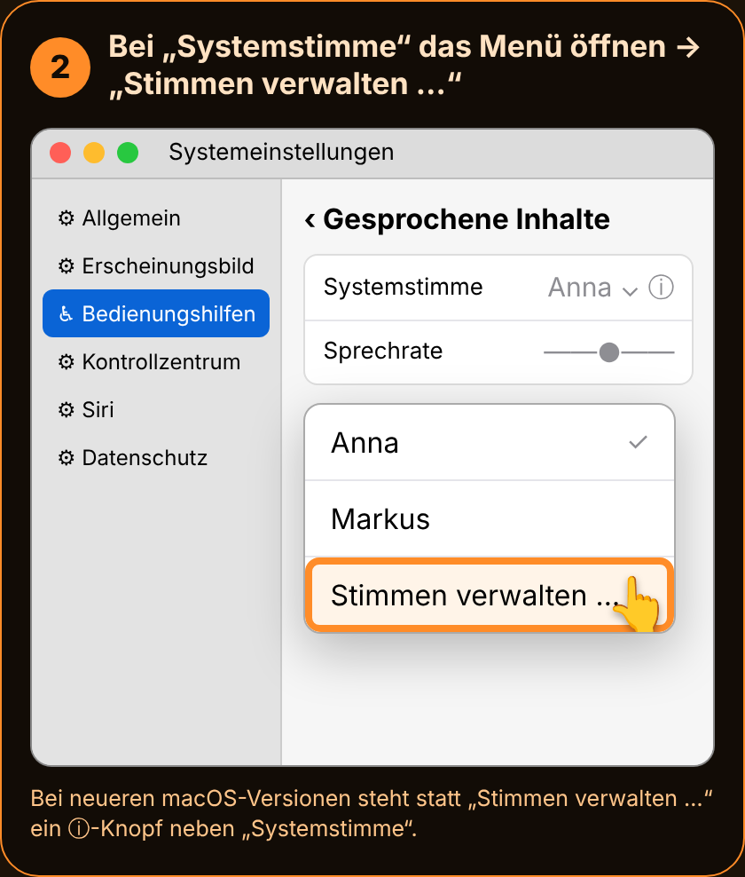
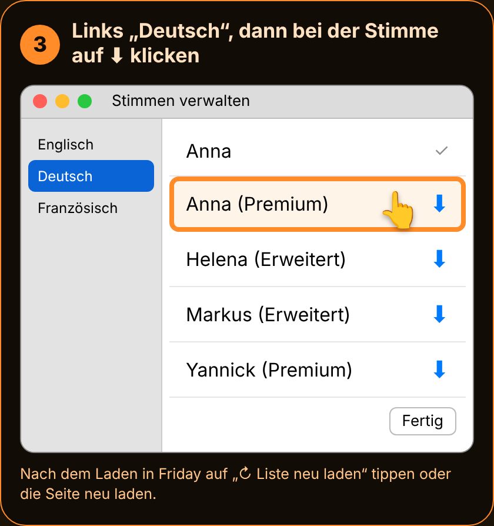
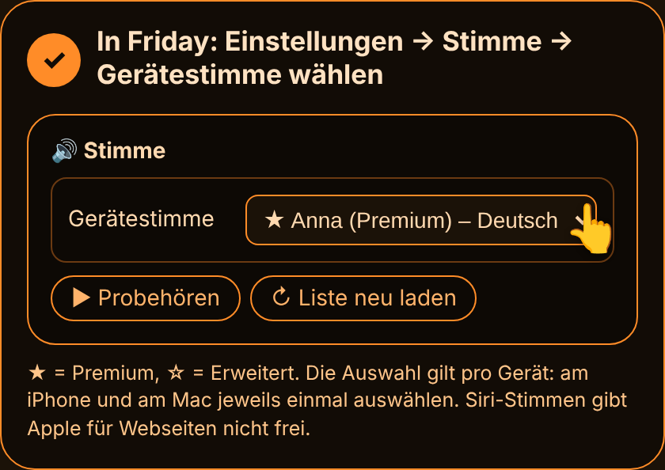

🔊 Schönere Stimme für Friday
Friday spricht mit den Stimmen von Apple. Die schönsten (Premium und Erweitert) sind kostenlos, müssen aber einmal geladen werden.
📱 iPhone





💻 Mac



✅ Zum Schluss in Friday

Die Bilder sind nachgebaut und können je nach iOS- oder macOS-Version leicht anders aussehen. Die Wege heißen aber gleich.